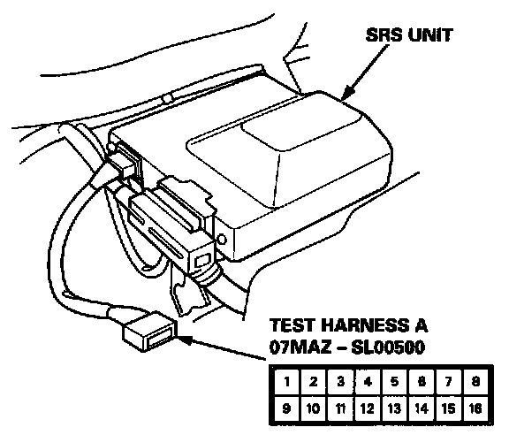
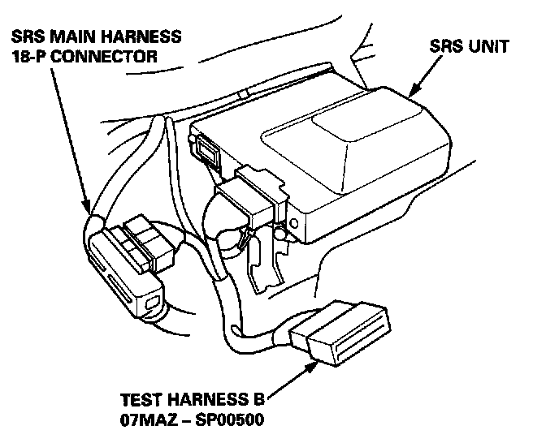
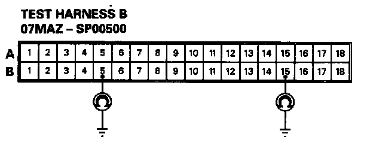
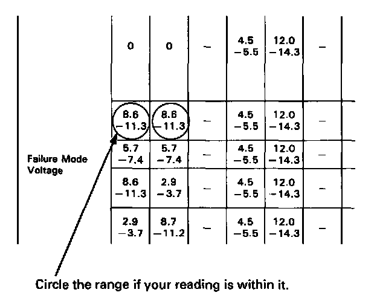
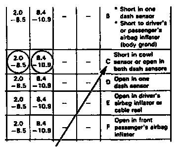
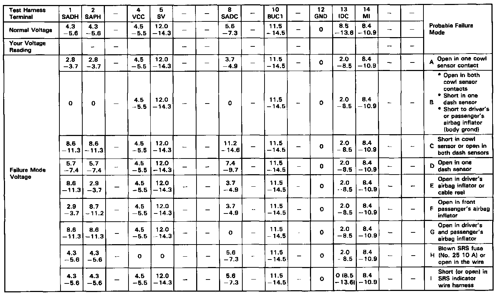
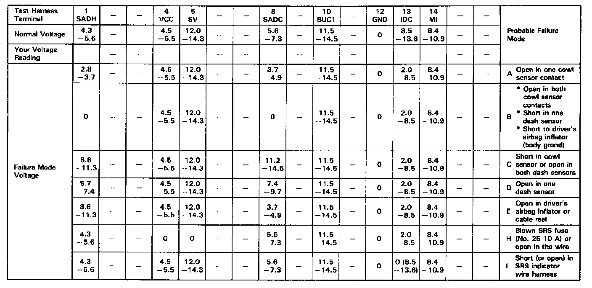

SRS Indicator Light Doesn't Go Off
SRS INDICATOR LIGHT STAYS ON CONTINUOUSLYNOTE: Before troubleshooting, make sure that battery voltage is 12 V or more. Otherwise you'll obtain wrong test readings.
1. Make a photocopy of the chart.

2. Connect Test Harness A to the SRS unit as shown.
3. Turn the ignition switch ON (II).
- Voltages in the chart assume the car's "battery voltage" is about 12 volts. Less than 12 volts will result in different or possibly false readings.
- Do not disconnect the airbags from the circuit when checking SRS unit voltages.
4. First, check for voltage between Test Harness Terminal No.12 (+) and ground (-).
- If no voltage is indicated, go to step 8 and continue checking all the other terminals.
- If voltage is indicated, there is a poor ground at the SRS unit. Read the following NOTE, and then go on to step 5.
NOTE: The original radio has a coded theft protection. circuit. Be sure to get the customer's code number before disconnecting the battery cables.
5. Before disconnecting any part of the SRS wire harness, connect the short connector(s) (RED) to the airbag(s).

6. Connect Test Harness B between the SRS unit and SRS main harness 18-P connector.

7. Check for continuity between the B5 terminal and body ground, and the B15 terminal and body ground.
- If there is continuity at either terminal, the SRS unit is faulty. Replace it and check the voltages according to the chart.
- If there is no continuity at either terminal, the SRS unit ground, the SRS unit component grounds or the SRS main harness is faulty. Check the grounds (check wire and control mounting bolts) and, if necessary, replace SRS main harness. Then check the voltages according to the chart.
Record your voltage readings, for each terminal, in the row of blank boxes near the top of the chart.

9. Compare each reading with the voltage ranges listed in the column below it. If the reading is within a range, circle that range.

- If you circled all the Failure Mode ranges across any row, check the car for the Probable Failure Mode listed at the end of the row. (Refer to the letter for that mode).
If you circled all the ranges in this row, follow the troubleshooting procedure under failure mode "C".
- If you did not circle all the ranges across any row, replace the SRS unit with a known-good unit, and retest.
* If all your voltage readings are now normal, replace the original SRS unit.
* If your voltage readings are still not normal but they don't fit within a complete row of Failure Mode ranges, check the condition of the terminals in each of the SRS connectors shown in the system diagram.
NOTE: Do not disconnect the airbag when checking SRS unit voltages.

With front passenger's airbag
NOTE: Do not disconnect the airbag when checking SRS unit voltages.

Without front passenger's airbag